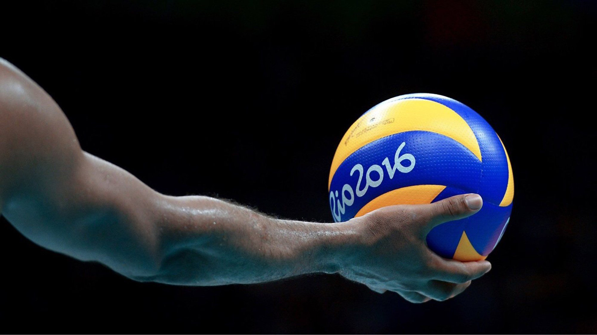
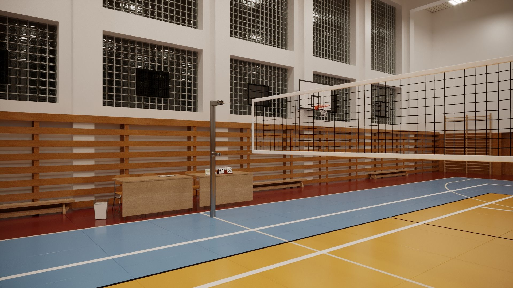
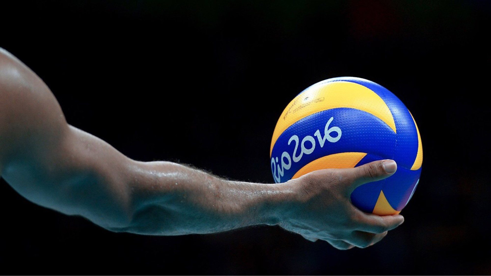
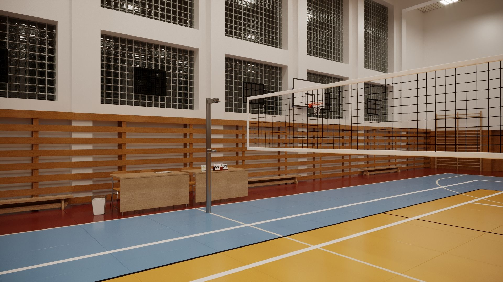
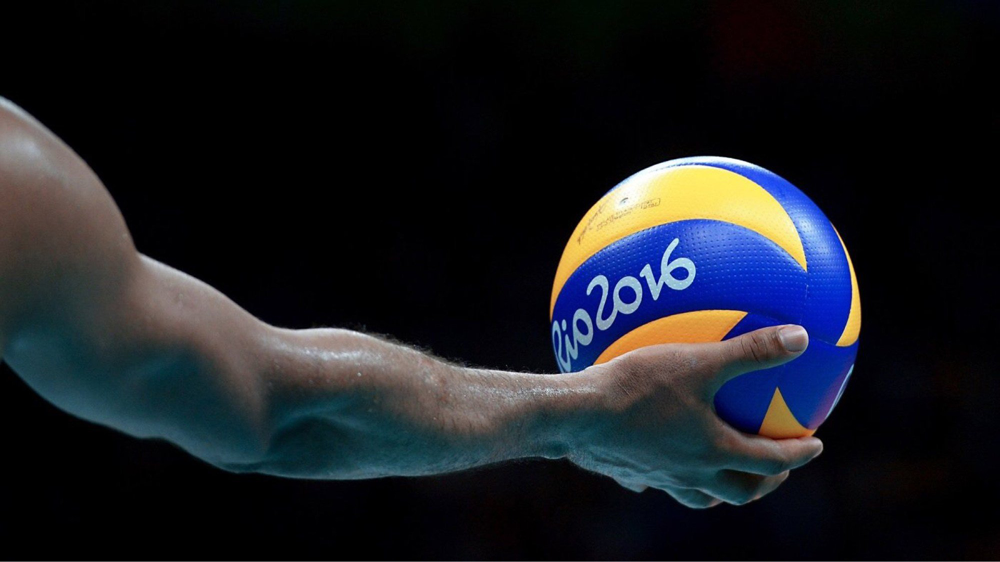
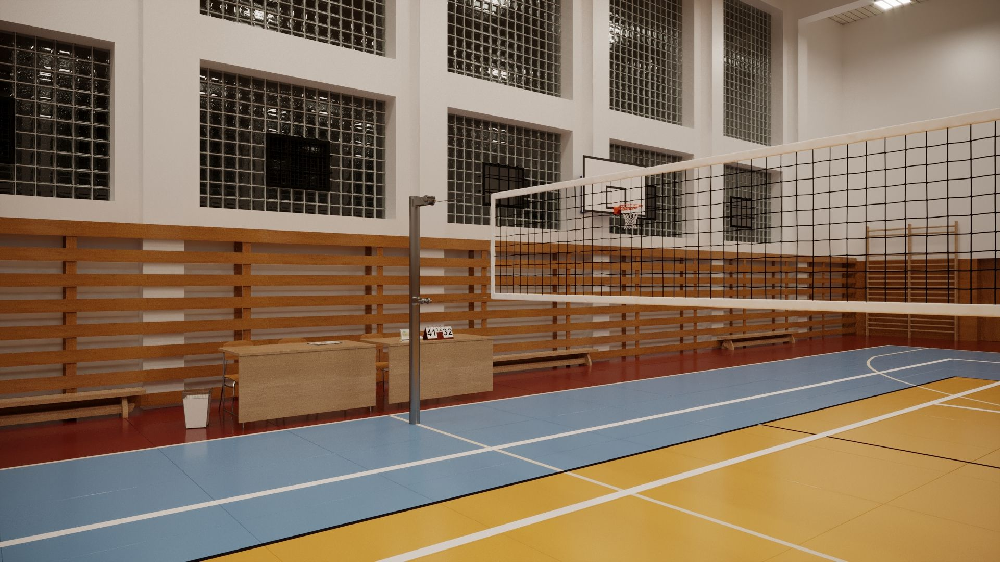

⬆


Волейбо́л (від англ. volleyball, також заст, діал.відбива́нка або сітківка) — спортивна гра з м'ячем, у якій дві команди змагаються на спеціальному майданчику, розділеному сіткою. Волейбол є олімпійським видом спорту.
Винахідником волейболу вважають Вільяма Джона Моргана, викладача фізичного виховання коледжу Асоціації молодих християн (YMCA) в місті Голіок (штат Массачусетс, США). 9 лютого 1895 року в спортивному залі він підвісив тенісну сітку на висоті 197 см і його учні, число яких на майданчику не обмежувалося, стали перекидати через неї баскетбольний м'яч. Морган назвав нову гру «мінтонет». Роком пізніше гру демонстрували на конференції коледжів асоціації молодих християн у Спрингфілді і за пропозицією професора Альфреда Т. Гальстеда отримала нову назву — «волейбол». У 1897 році були опубліковані перші правила волейболу. Загальні правила гри сформувалися в 1915—1925 роках. У країнах Америки, Африки, Європи практикувався волейбол з шістьма гравцями на майданчику, в Азії — з дев'ятьма або дванадцятьма гравцями на майданчику 11×22 м без зміни позицій гравцями під час матчу. У 1922 році проведені перші загальнонаціональні змагання — у Брукліні відбувся чемпіонат YMCA за участю 23 чоловічих команд. У тому ж році була утворена федерація баскетболу і волейболу Чехословаччини — перша у світі спортивна організація з волейболу. У другій половині 1920-х років виникли національні федерації Болгарії, СРСР, США та Японії. У той же період формуються головні аспекти техніки — подача, приймання, нападний удар і блок. На їх основі виникає тактика командних дій. У 1930-і роки з'явилися груповий блок і страхування, варіювалися нападні й обманні удари. У 1936 році на конгресі Міжнародної федерації з гандболу, що проводився в Стокгольмі, делегація Польщі виступила з ініціативою організувати технічний комітет з волейболу як частину федерації з гандболу. Утворили комісію, до якої увійшли 13 країн Європи, 5 країн Америки і 4 країни Азії. Члени цієї комісії як основні прийняли американські правила з незначними змінами: виміри проводили в метричних пропорціях, м'яча можна було торкатися всім тілом вище пояса, після того, як торкнувся м'яча на блоці, гравцю було заборонено повторне торкання поспіль, висота сітки для жінок — 224 см, зона подачі була суворо обмежена.
1984 року Поля Лібо змінив на посту президента FIVB доктор Рубен Акоста, адвокат з Мексики. За ініціативою Рубена Акости проведено численні зміни в правилах гри, направлені на підвищення видовищності змагань. Напередодні Олімпійських ігор-1988 в Сеулі відбувся 21-й конгрес FIVB, на якому були прийняті зміни в регламенті вирішальної п'ятої партії: тепер вона повинна гратися за системою «ралі-пойнт» («розіграш-очко»). З 1998 року така система підрахунку очок розповсюджується на весь матч, у тому ж році з'явилося амплуа ліберо.
На початку 1980-х з'явилася подача в стрибку і сама гра стала ще агресивнішою і швидшою. Збільшився й зріст волейболістів. Якщо в 1970-і роки в команді могло не бути жодного гравця зростом вище 2-х метрів, то з 1990-х років все змінилося. У командах високого класу нижчими 195—200 см зазвичай є лише ліберо. Навіть у жіночих командах гравці вищі за два метри — нормальне явище. З 1990 року стали розігрувати Світову лігу з волейболу, щорічний цикл змагань, покликаний збільшити популярність цього виду спорту у всьому світі. З 1993 проводять аналогічне змагання в жінок — «Гран-прі».
Гра ведеться на прямокутному майданчику розміром 18х9 метрів. Висота сітки для чоловіків — 2,43 м, для жінок — 2,24 м. Майданчик розділений посередині сіткою. Грають сферичним м'ячем колом 65—67 см, вагою 260—280 г. Кожна з двох команд складається максимум з 12-ти гравців, а на полі одночасно перебувають 6. Мета гри — ударом добити м'яч до ігрової поверхні майданчика половини суперника або примусити його помилитися.
Гру починають введенням м'яча в гру за допомогою подачі. Після введення м'яча в гру подачею та успішного розіграшу подача переходить до тієї команди, яка здобула очко. Майданчик за кількістю гравців умовно розділено на 6 зон. Після кожного переходу права подачі переходять від однієї команди до іншої унаслідок розіграшу очка, гравці переміщаються в наступну зону за годинниковою стрілкою.
Волейбольний майданчик
Волейбольний м'яч